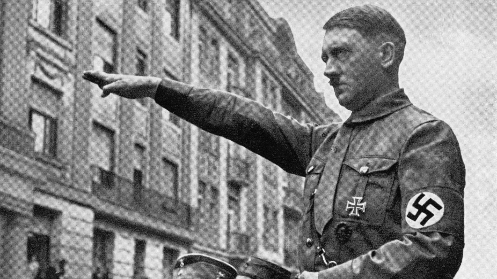

The Holocaust
The Holocaust was an unimaginable nightmare—an obscene, systematic campaign of mass murder that claimed six million Jewish lives, along with millions of others deemed "undesirable" by the Nazi regime. Led by Adolf Hitler, the Nazis turned genocide into an industrial operation, ruthlessly exterminating people with horrifying efficiency. Men, women, and children were stripped of their humanity, transported in death trains, and murdered in concentration camps like Auschwitz and Treblinka, where gas chambers and crematoriums were used like factories of death. The brutality was staggering—whole families obliterated in an instant, cultures wiped out, and innocent lives snuffed out with no remorse. This was not just killing; it was a calculated erasure of entire populations, an affront to all that is human. The sheer inhumanity of it—the cold, bureaucratic nature of mass murder—defies comprehension. It remains the most grotesque crime ever committed, a stain on humanity that should never be forgotten.
Adolf Hitler
Adolf Hitler was the leader of Nazi Germany and the primary architect of the Holocaust. Born in Austria in 1889, Hitler rose to power as chancellor in 1933 and became the dictator of Germany. His ideology, outlined in his book Mein Kampf, promoted the belief in Aryan racial superiority and blamed Jews, Roma, and others for Germany's ills. Hitler's aggression led to World War II and the implementation of the "Final Solution," a plan to systematically exterminate Jews and other minorities. His totalitarian control over Germany turned the nation into a machine of war and mass murder. The horrors of the Holocaust, under his orders, marked one of the darkest periods in human history. In 1945, as Germany collapsed under the weight of defeat, Hitler took his own life in a bunker in Berlin, leaving behind a legacy of destruction and suffering.
Key Figures and Locations
At the core of the Holocaust was Heinrich Himmler, head of the SS, who oversaw the terror, and Adolf Eichmann, who coordinated the logistics of deportations and killings. The primary sites of the genocide were concentration and extermination camps like Auschwitz, Treblinka, and Sobibor, where millions were killed in gas chambers, through shootings, starvation, and forced labor.
The "Final Solution"
In 1942, Hitler and the Nazis officially adopted the "Final Solution"—a systematic plan to eradicate the Jewish population in Europe. Jews were rounded up, transported in horrific conditions, and murdered in death camps, while others were executed or worked to death in forced labor camps. The brutality of the Nazis knew no limits, with medical experiments and mass executions marking the grim reality.
The Aftermath
The Holocaust ended with the fall of Nazi Germany in 1945. The Allied forces liberated the camps, revealing the full extent of the atrocities. The world was left in horror, and many of the surviving victims struggled to rebuild their lives. At the Nuremberg Trials, Nazi leaders, including those responsible for the Holocaust, were held accountable for war crimes.
Legacy of the Holocaust
The Holocaust remains one of the most horrific genocides in history, serving as a stark reminder of the consequences of unchecked hatred, totalitarianism, and racism. It led to the creation of the United Nations, human rights laws, and numerous memorials to the victims. "Never Again" became a global call to prevent future genocides, but the haunting memory of the Holocaust continues to shape how the world confronts hatred and bigotry.